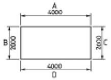
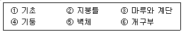

건축목공산업기사 (2005-05-29 기출문제)
1과목: 건축일반
1. 철근콘크리트 구조에 대한 설명으로 옳지 않은 것은?
- 내진, 내화, 내구적이다.
- 구조물의 형상치수를 자유롭게 선택할 수 있다.
- 균열이 발생되기 쉽다.
- 공기가 짧으며 철거가 용이하다.
(정답률: 84%)

2. 벽돌벽의 두께 결정요소와 가장 관계가 먼 것은?
- 벽의 높이
- 건물의 층수
- 벽돌의 쌓는 방법
- 벽의 길이
(정답률: 75%)
3. 철근과 콘크리트의 부착력 관계에 대한 기술 중 잘못된 것은?
- 압축강도가 큰 콘크리트일수록 부착력은 커진다.
- 콘크리트의 부착력은 철근의 주장(周長)에 반비례한다.
- 철근의 표면 상태와 단면 모양에 따라 부착력이 좌우된다.
- 부착력은 정착길이를 크게 증가함에 따라서 비례 증가되지는 않는다.
(정답률: 94%)
4. 다음 중 조적조 건물의 벽돌벽 균열 원인과 가장 관계가 먼 것은?
- 건물기초의 부동침하
- 건물의 불균형 하중
- 문꼴크기의 불합리ㆍ불균형 배치
- 벽돌 쌓기전의 벽돌에 약간의 물축임
(정답률: 93%)
5. 금속의 방식법에 대한 설명 중 옳지 않은 것은?
- 다른 종류의 금속을 서로 잇대어 사용한다.
- 표면은 깨끗하게 하고 물기나 습기가 없도록 한다.
- 균질한 것을 선택하고 사용할 때 큰 변형을 주지 않도록 한다.
- 도료나 내식성이 큰 금속으로 표면에 피막을 하여 보호한다.
(정답률: 95%)
6. 네트워크 공정표의 크리티칼 패스(CP)에 대한 설명으로 옳은 것은?
- 결합점이 가지는 여유시간
- 미리 지정된 공기
- 개시결합점에서 종료결합점에 이르는 가장 긴 패스
- 후속작업의 TF에 영향는 끼치는 플로트
(정답률: 93%)
7. 다음 중 열가소성 수지가 아닌 것은?
- 요소수지
- 아크릴수지
- 염화비닐수지
- 폴리에틸렌수지
(정답률: 70%)
8. 제도 용지에 관한 설명으로 옳지 않은 것은?
- 도면은 그 길이 방향을 좌우 방향으로 놓은 위치를 정 위치로 한다.
- A1 용지의 크기는 약 1.0m2 이다.
- A0 제도 용지의 단변과 장변의 비는 1:√2이다.
- A0 용지가 A1용지보다 크다.
(정답률: 70%)
9. 목조 왕대공지붕틀에서 압축력과 휨모멘트를 동시에 받는 부재는?
- 빗대공
- 왕대공
- 평보
- 人자보
(정답률: 86%)
10. 다음 그림에서 치수기입법이 잘못된 것은?

- A
- B
- C
- D
(정답률: 86%)
11. 목구조의 마루 중 보를 쓰지 않고 층도리와 간막이도리에 직접 장선을 걸쳐대고 그 위에 마루널을 깐 것은?
- 납작마루
- 홑마루
- 보마루
- 짠마루
(정답률: 74%)
12. 시공자의 선정방법에 있어서 건설업자의 자재력, 기술, 경력, 신용 등을 조사하여 소수(3∼7정도)의 참가자를 건축주가 선정하여 입찰시키는 방법은?
- 일반경쟁입찰
- 지명경쟁입찰
- 특명입찰
- 수의계약
(정답률: 70%)
13. 보이지 않는 부분을 그릴 때 사용하는 선의 종류는?
- 굵은 실선
- 가는 실선
- 파선
- 일점 쇄선
(정답률: 93%)
14. 제도의 선긋기 방법에서의 요령 및 주의사항 중 옳지 않은 것은?
- T자는 수시로 닦아서 도면이 더렵혀지지 않도록 한다.
- 수직선은 아래에서 위로 긋는다.
- 같은 도면에서 여러 개의 수평선은 T자를 아래에서 위로 끌어 올리면서 차례로 긋는다.
- 사선은 삼각자의 방향에 따라서 아래에서 위로, 또는 위에서 아래로 긋는다.
(정답률: 알수없음)
15. 조적조에서 테두리보의 역할에 대한 설명으로 옳지 않은 것은?
- 분산된 벽체를 일체로 연결한다.
- 개구부만을 보강하는 역할을 한다.
- 세로철근의 끝을 정착한다.
- 지붕이나 바닥의 하중을 균등하게 벽체에 전달한다.
(정답률: 75%)
16. 평면도에서 표현되지 않는 것은?
- 각 실의 벽체의 길이
- 욕조, 세면기의 위치
- 벽체의 두께
- 반자의 높이
(정답률: 70%)
17. 결합재로서 시멘트를 사용하지 않고 폴리에스테르수지 또는 에폭시수지 등을 액상으로 하여 사용하고, 굵은골재 및 분말상 충전제를 혼합하여 만든 것은?
- PS콘크리트
- 프리팩트콘크리트
- 레진콘크리트
- 섬유보강콘크리트
(정답률: 65%)
18. 다음 중 하중에 저항하는 구조부재로 볼 수 없는 것은?
- 철골보
- 철근콘크리트기둥
- 경량칸막이벽
- 벽돌내력벽
(정답률: 80%)
19. 턴키(turn key)도급방식이란?
- 공사금액을 구성하는 물공량 또는 단위공사 부분에 대한 단가만을 확정하고 공사완료시 실수량에 따라 정산하는 방식
- 공사의 실비를 건축주와 도급자가 확인 정산하는 방식
- 공사의 모든 요소를 포괄하여 계약하는 도급방식
- 공사비의 총액을 확정하여 계약하는 도급방식
(정답률: 69%)
20. 철근콘크리트 압축부재에 관한 설명 중 옳지 않은 것은?
- 띠철근 압축부재의 단면의 최소 치수는 300mm 이다.
- 띠철근 압축부재의 최소 단면적은 60,000mm2 이다.
- 압축부재의 축방향 주철근의 최소 개수는 직사각형띠철근 내부의 철근의 경우 4개이다.
- 압축부재의 축방향 주철근의 최소 개수는 나선철근으로 둘러싸인 철근의 경우 6개이다.
(정답률: 74%)
2과목: 목공작업 및 재료
21. 벽 거푸집에 관한 기술중 틀린 것은?
- 벽 거푸집은 보통 패널을 양면에 나누어 댄다.
- 거푸집의 수직 멍에는 60㎝ 간격으로 세운다.
- 가로멍에 받이 대기의 간격은 일반적으로 밑에서 75㎝, 위에서 90 - 110㎝ 로 한다.
- 거푸집 밑에는 청소 구멍을 두어 쉽게 막을 수 있도록 짜야 한다.
(정답률: 54%)
22. 다음중 목재의 강도 비교가 맞는 것은?
- 인장강도 ＞ 휨강도 ＞ 압축강도 ＞ 전단강도
- 인장강도 ＞ 압축강도 ＞ 전단강도 ＞ 휨강도
- 인장강도 ＞ 압축강도 ＞ 휨강도 ＞ 전단강도
- 인장강도 ＞ 전단강도 ＞ 휨강도 ＞ 압축강도
(정답률: 65%)
23. 거푸집과 철근사이의 간격을 유지하기 위하여 설치하는 것은?
- 스페이서
- 세퍼레이터
- 유로폼
- 슬라이딩폼
(정답률: 75%)
24. 왕대공 트러스에서 평보를 기둥에 긴결시킬 때 적당한 긴결철물은?
- 관통볼트
- 주걱볼트
- 감잡이쇠
- 꺽쇠
(정답률: 82%)
25. 양판문 제작시 선대와 윗막이, 밑막이대와의 맞춤은?
- 짧은장부맞춤
- 두쌍장부맞춤
- 부채장부맞춤
- 주먹장부맞춤
(정답률: 93%)
26. 반자틀의 치켜올림 정도로 적당한 것은?
- 간사이의 1/50 정도
- 간사이의 1/100 정도
- 간사이의 1/150 정도
- 간사이의 1/200 정도
(정답률: 75%)
27. 가장 규모가 큰 곳에 설치하여 사용할 수 있는 계단은?
- 틀 계단
- 따낸 옆판 계단
- 사다리 계단
- 옆판 계단
(정답률: 91%)
28. 목재의 성질에 관한 설명중 맞지 않는 것은?
- 목재의 수축은 심재부에서 크고, 변재부에서 작다.
- 목재가 수축할 때에는 변재측으로 우그러든다.
- 목재의 비중은 0.4 ∼ 0.8 정도이고, 침엽수는 0.6정도가 표준이다.
- 목재의 상처가 압축측에 있는 것보다 인장측에 있는 것이 불리하다.
(정답률: 75%)
29. 목공용 손밀이 대패를 사용할 때 알아두어야 할 예비지식 중 옳지 못한 것은?
- 대팻날이 잘 갈아져야 대패질이 깨끗이 된다.
- 테이블을 잘 조정하여야 정확한 평면으로 대패질이 된다.
- 엇결방향으로 대패질을 해야 대패질된 면이 깨끗하다.
- 날입의 나비가 정확하게 조정이 되어야 대패질 한 면이 깨끗하게 된다.
(정답률: 80%)
30. 모임지붕 바른 귀 추녀에서 지붕물매 5/10일때 귀물매는 지붕물매의 얼마나 되는가?
- 1배
- √2배
- √3배
- 1/√2배
(정답률: 67%)
31. 경골 지붕틀에 쓰이는 부재의 치수로 옳은 것은?
- 100 × 50mm 정도
- 130 × 60mm 정도
- 140 × 70mm 정도
- 160 × 80mm 정도
(정답률: 50%)
32. 규구술과 가장 밀접한 관계가 있는 지붕은?
- 박공지붕
- 부른지붕
- 꺽임지붕
- 모임지붕
(정답률: 54%)
33. 슬라이딩폼에 대한 기술 중 옳지 않은 것은?
- 연속적으로 콘크리트를 부어 넣을 수 있기 때문에 일체성이 확보된다.
- 공사기간이 단축된다.
- 사일로(silo) 등의 복잡한 공사에 부적당하다.
- 내외부 비계가 불필요하다.
(정답률: 65%)
34. 풍소란(風小欄)의 설명으로 옳은 것은?
- 선틀과 윗틀의 접합부
- 문 상하부의 홈으로서 방풍의 역할
- 미서기문 마중대을 턱솔 또는 딴혀로 하여 방풍의 역할
- 선틀과 문틀 부분을 턱지게 하여 방풍 역할
(정답률: 50%)
35. 계단과 채양 거푸집의 가공 및 조립 방법으로 옳지 않은 것은?
- 원척도를 작성하고 그에 따라 가공 조립한다.
- 계단 거푸집은 챌판에 구멍을 내어 콘크리트를 주입한다.
- 콘크리트 압력에 거푸집 위치가 변하지 않도록 주의한다.
- 채양 거푸집은 설치 및 설치 완료시 반드시 수평을 보아야 한다.
(정답률: 74%)
36. 다음 창호 설명 중 부적당한 것은?
- 창틀의 맞춤은 주먹장 맞춤으로 한다.
- 미서기 2중창 창틀 넓이는 150mm 이상으로 한다.
- 창문 울거미 맞춤은 내다지 쌍장부로 한다.
- 여닫이 문틀 면에는 턱을 만들어 밀실하게 한다.
(정답률: 알수없음)
37. 2층 목조 마루틀 중에서 가장 넓은 간사이에 사용하는 마루틀은?
- 홑마루틀
- 보마루틀
- 짠마루틀
- 납작마루
(정답률: 60%)
38. 달대와 반자틀의 맞춤으로 적당한 것은?
- 턱 장부 맞춤
- 외주먹장 맞춤
- 긴 장부 맞춤
- 쌍 장부 맞춤
(정답률: 54%)
39. 목재가 팽창, 수축, 휨, 뒤틀림의 변형이 생기는 주 원인은?
- 목재의 흠
- 취재율
- 함수율
- 나이테
(정답률: 알수없음)
40. 워플거푸집에 관한 설명으로 옳은 것은?
- 무량판구조에서 특수상자모양의 기성재 거푸집이다.
- 경사가 있는 원형굴뚝 등에 쓰이는 철판 거푸집이다.
- 사일로 형을 만드는 거푸집이다.
- 철판, 앵글을 써서 패널을 짜고, 보울트, 나사로 간단히 조여만든 거푸집이다.
(정답률: 77%)
3과목: 안전관리
41. 다음 중 박리제로 적당하지 않은 것은?
- 합성수지
- 석유나 아마유
- 파라핀
- 크레오소오트
(정답률: 86%)
42. 다음 중 상하의 물매가 다르게 된 지붕은?
- 망사르드 지붕
- 박공 지붕
- 모임 지붕
- 방형 지붕
(정답률: 93%)
43. 맞춤과 용도의 조합 중 옳지 않은 것은?
- 반턱맞춤 - 토대
- 걸침턱맞춤 - 왕대공과 마룻대
- 숭어턱맞춤 - 기둥과 도리
- 짧은 장부맞춤 - 기둥하부
(정답률: 75%)
44. 왕대공지붕틀에서 구름 받이와 관계가 있는 것은?
- 중도리를 보강한다.
- ㅅ 자보를 보강한다.
- 달대공을 보강한다.
- 빗대공을 보강한다.
(정답률: 60%)
45. 목조 구조의 뼈대를 구성하는 공사 순서는?

- ① → ③ → ⑤ → ② → ④ → ⑥
- ④ → ① → ⑤ → ⑥ → ② → ③
- ① → ④ → ⑤ → ② → ③ → ⑥
- ④ → ① → ② → ⑤ → ③ → ⑥
(정답률: 94%)
46. 기초 거푸집 시공시 기초판 윗면의 경사가 얼마 이상이면 옆판 및 경사면에도 거푸집을 대는가?
- 6/10
- 5/10
- 4/10
- 3/10
(정답률: 74%)
47. 마루시공시 멍에의 방향은?
- 토대방향으로 배치한다.
- 밑둥잡이 방향으로 배치한다.
- 장선방향으로 배치한다.
- 마루널 방향으로 배치한다.
(정답률: 72%)
48. 목재의 섬유포화점의 함수율로 적당한 것은?
- 10-15%
- 15-20%
- 30% 정도
- 50% 정도
(정답률: 79%)
49. 목재에 사용되는 보강 철물중 듀벨(Dbel)이 저항하는 힘은?
- 인장력
- 압축력
- 휨모멘트
- 전단력
(정답률: 72%)
50. 거푸집의 측압에 가장 큰 영향을 주는 요소는 어느 것인가?
- 콘크리트의 시공연도
- 콘크리트의 붓기 속도
- 골재의 입도
- 콘크리트의 다지기 방법
(정답률: 69%)
51. 산업재해 조사표에 기록해야 할 내용이 아닌 것은?
- 재해발생 일시와 장소
- 피해자의 의견
- 재해원인과 결과
- 재해유발자 및 재해 신상명세
(정답률: 77%)
52. 다음중 분말 소화 약제가 아닌 것은?
- 중탄산소다
- 탄산마그네슘
- 인산 3칼슘
- 사염화탄소
(정답률: 63%)
53. 시각의 표시중 정량적 표시장치에 속하지 않는 것은?
- 계수형
- 정침동목형
- 정목동침형
- 압력형
(정답률: 73%)
54. 안전의 3요소로 옳지 않은 것은?
- 자본적 요소
- 교육적 요소
- 관리적 요소
- 기술적 요소
(정답률: 91%)
55. 근로불능상해일수(근로손실일수)를 나타낸 식은?
- 연 근로일수 × 365/300
- 휴업일수 × 300/365
- 연 근로일수 × 300/365
- 휴업일수 × 365/300
(정답률: 알수없음)
56. 다음 중 안전수칙에 포함되지 않는 사항은?
- 표준 작업시간
- 작업자의 두발, 복장 및 장구등의 규제
- 각종기계의 동작순서의 강조
- 작업방법, 보호구 착용시기 및 종류
(정답률: 알수없음)
57. 인간과 기계의 기능을 비교할 때 인간이 기계를 능가하는 기능으로 옳지 않은 것은?
- 융통성이 있다.
- 발생할 결과를 추리한다.
- 여러 가지 다른 기능들을 동시에 수행한다.
- 정보와 관련된 사실을 적절한 시기에 상기할 수 있다.
(정답률: 73%)
58. 재해의 원인 중 신체적 원인에 해당되지 않는 것은?
- 작업자의 피로
- 작업자의 수면부족
- 작업복의 부적당
- 작업자의 질병
(정답률: 80%)
59. 연료와 산소의 화학적 반응을 차단하는 힘이 강하여 소화능력이 이산화탄소 소화기의 2.5배 정도이며 컴퓨터, 고가의 전기기계, 기구의 소화에 많이 이용되는 소화기는?
- 분말소화기
- 포말소화기
- 강화액소화기
- 할론가스소화기
(정답률: 77%)
60. 안전색채의 선택시 고려하여야 할 사항이 아닌 것은?
- 순백색을 선택한다.
- 자극이 강한 색은 피한다.
- 안정감을 내도록 한다.
- 밝고 차분한 색을 선택한다.
(정답률: 89%)